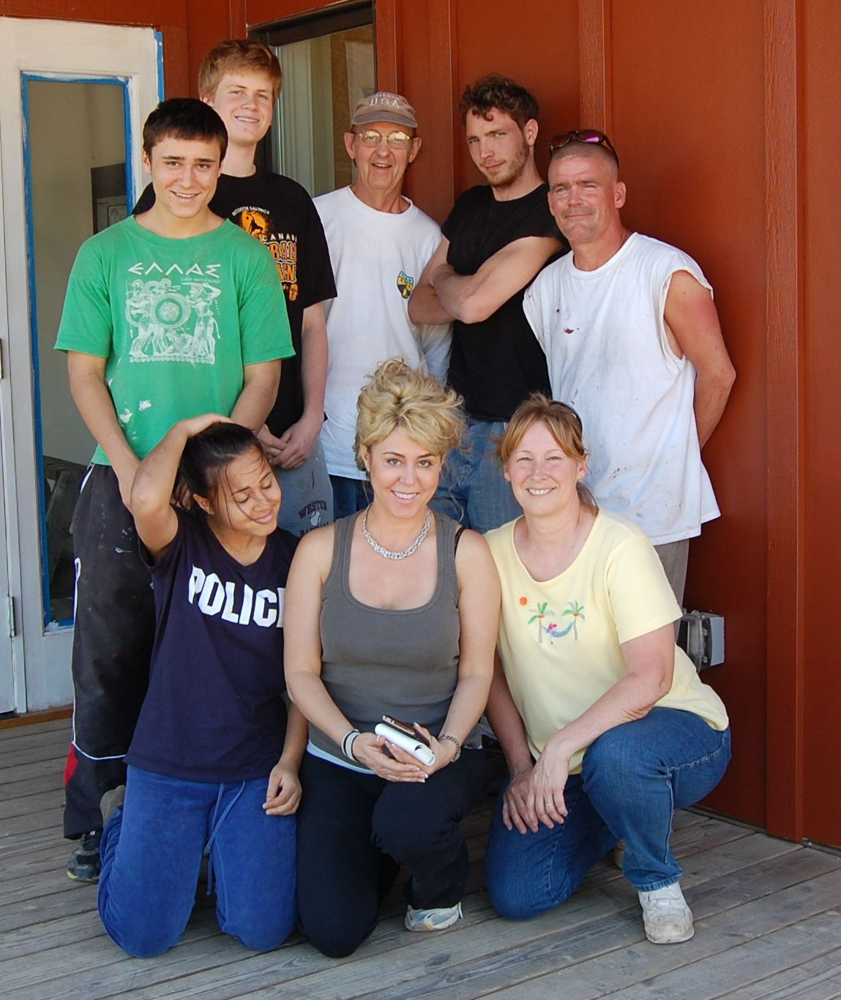
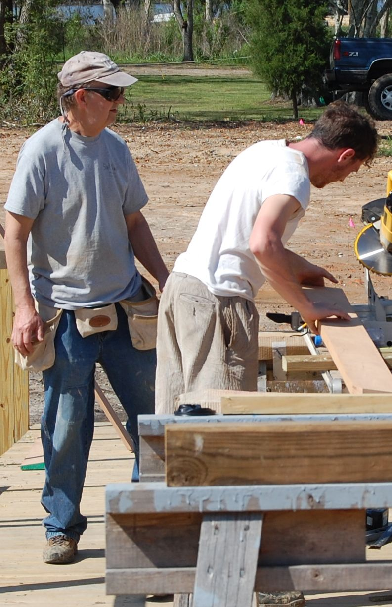
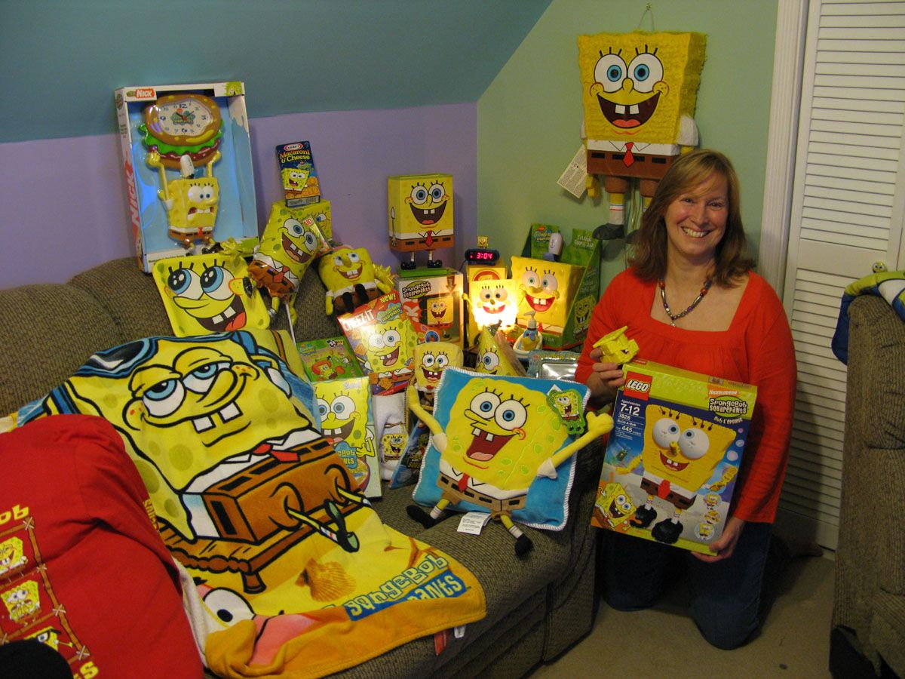

Welcome to Surface Elegance
Surface Elegance is a small remodeling company with a unique focus on projects artistic in nature.
Such projects include staining and painting floors, sculpting walls using many kinds of medium, tiling, painting, and design consulting.
Visit the services section to view the various kinds of project tasks we have taken on.
Check out the
volunteer section for before and after photos of my recent trip to Pearlington, Mississippi. With four of us from here in Charlottesville via the Building Goodness Foundation, a family of four from Vancouver, Canada who also volunteered through BGF, and twenty-something high schoolers from St. Louis who were staying at the Pearlington Recovery Center, we were able to complete TWO COATS of exterior painting on the Pearlington Community Center in three days. The interior is six thousand square feet and two stories high in some places, so, yeah, we ROCKED!!!
Here's our team below on left, standing in back from left to right, Alexander Milani, David McFayden, Charlie Strickland, Jack Schatzman and Tim Duke. In front, Katrina Milani, Nicole Milani, and myself. Photo on the right shows Charlie and Jack manufacturing the railings.

Click on this link for the
Building Goodness Foundation.
VOLUNTEER TODAY!: There are plenty of opportunities in Charlottesville and the surrounding area to volunteer your time in either your specialized field or generally helping others.
Meet Karen Kocik

Karen Kocik (aka Schaefer), started Surface Elegance in 1995 after 15 years of working in the computer field primarily as a software engineer, but also as a technical writer and IT specialist. Learn more about Karen and family in the
family section.
Please email
karen@surface-elegance.com if you have questions on products, processes or costs to do these projects. If you'd like to schedule a local estimate or consult, call us at (434) 531-4772.